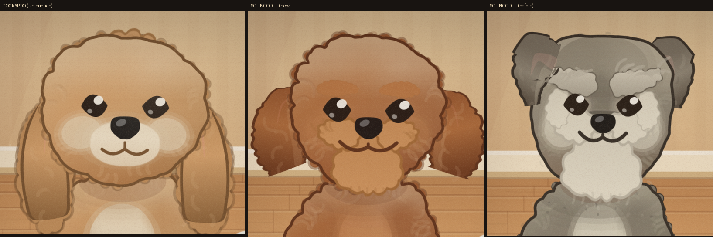
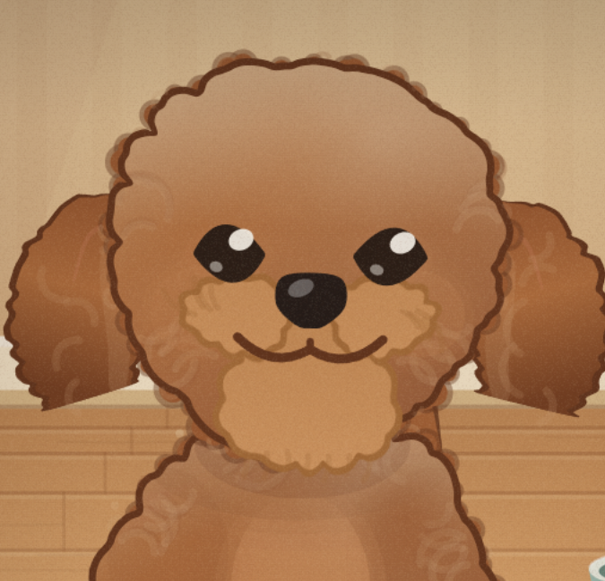
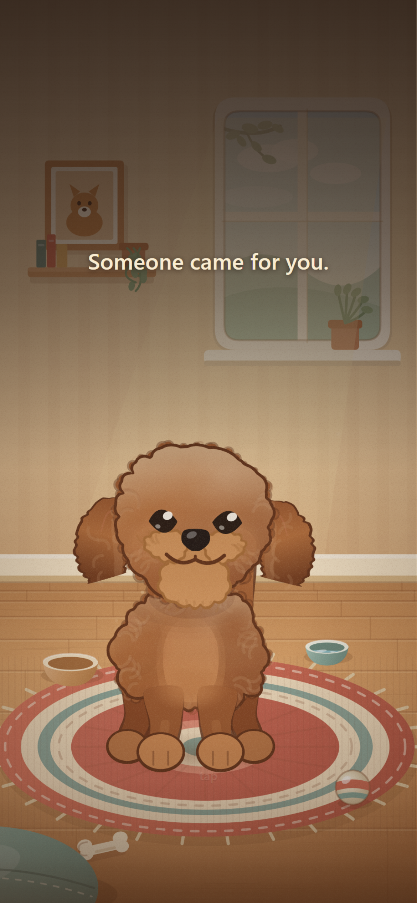

Redone after your feedback. Best viewed on a phone. Two small things at the bottom I'd like your taste on — nothing is blocked waiting for you.
The change

Left: the Cockapoo (untouched). Middle: your Schnoodle now. Right: the old grey one you said looked angry.
What was actually making him angry. The eyebrows slanted down toward the middle of his face — which is the strongest anger signal there is in any animal. It turns out that was written on purpose: the note in the code says "a pleased dog lifts the outer brow." True of the movement, but as a resting shape it's a scowl. On top of that the brows cast a shadow onto his eyelids, wore a hard dark outline right above the eye, and were a stark pale patch against grey. Four separate anger cues stacked up. All gone.
His face now

The face she'll see every time she opens it. Bigger, rounder, level eyes set wider and lower, a proper forehead dome, short muzzle, and a smile.
Him in his room

The auburn also fixes something else — the grey dog visibly sat apart from this warm amber room. He belongs in it now.
Eyebrows: removed, as you asked. The images above are already updated. It gives him the cleanest, roundest dome and it's the closest to your reference photo. The trade you've accepted is that he now reads as a plain doodle rather than carrying any schnauzer note — his beard and moustache still break up his jaw. It's additive to put back if you ever change your mind; the history is kept in the code.
Two things still open for your taste
1. His eyes. Big and level now, but the corners come to slight points, so they read a touch geometric next to the Cockapoo's rounder, softer ones. Want me to round them off?
2. The curls. The fur texture draws as small squiggles that can read a little like faint handwritten letters rather than curls — most visible on his ears and forehead. Now more noticeable than before, since the eyebrows were previously drawing the eye away from them. Want that toned down?
For the record: the Shiba and the Cockapoo were verified pixel-for-pixel unchanged across twelve full frames while all this was done — so nothing else in the game shifted.